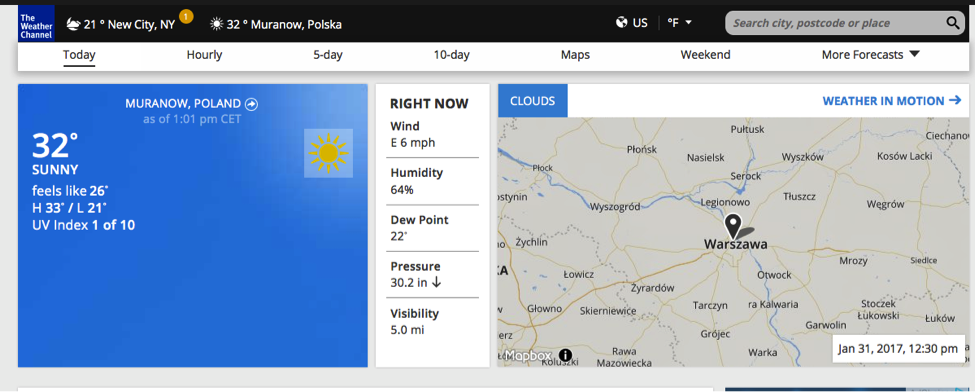
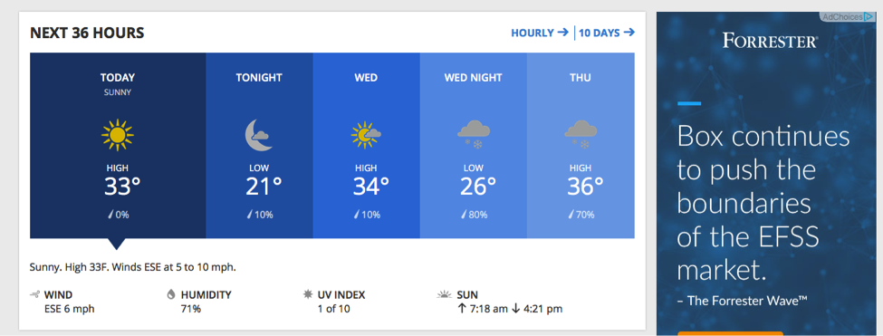
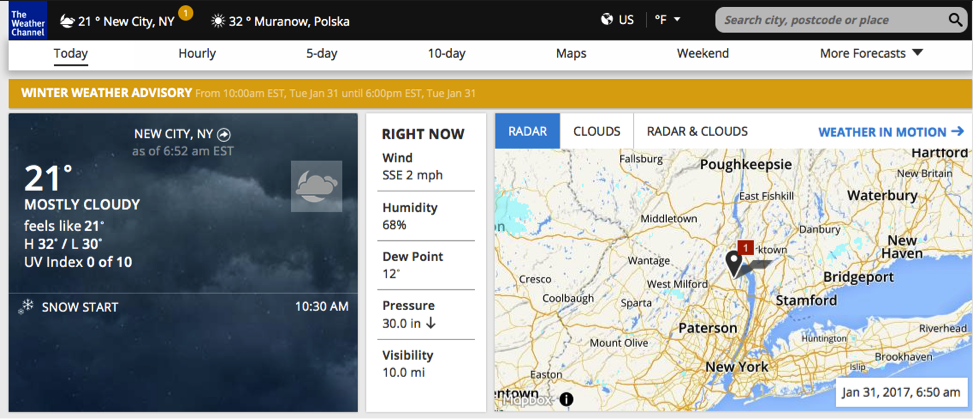
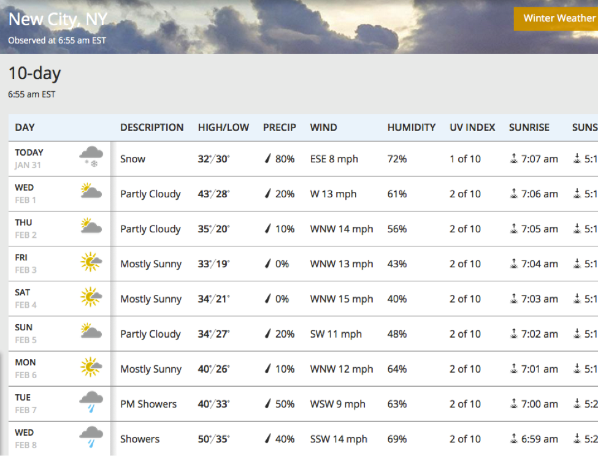
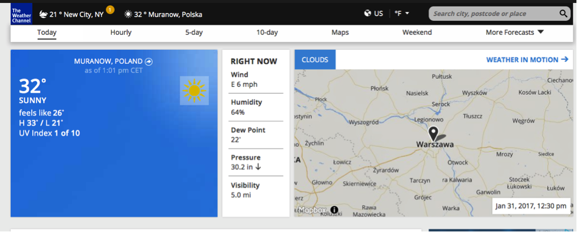
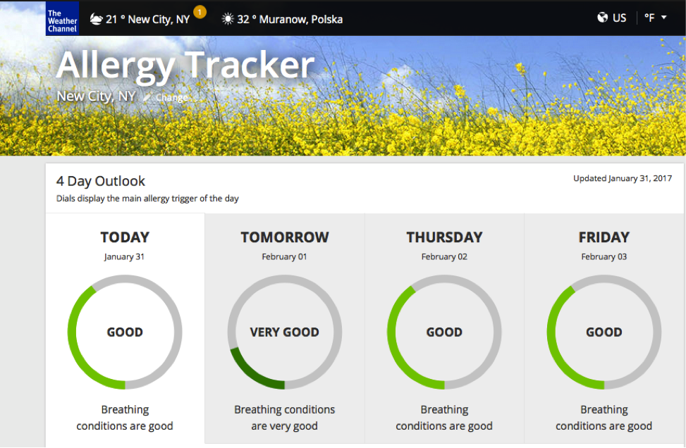
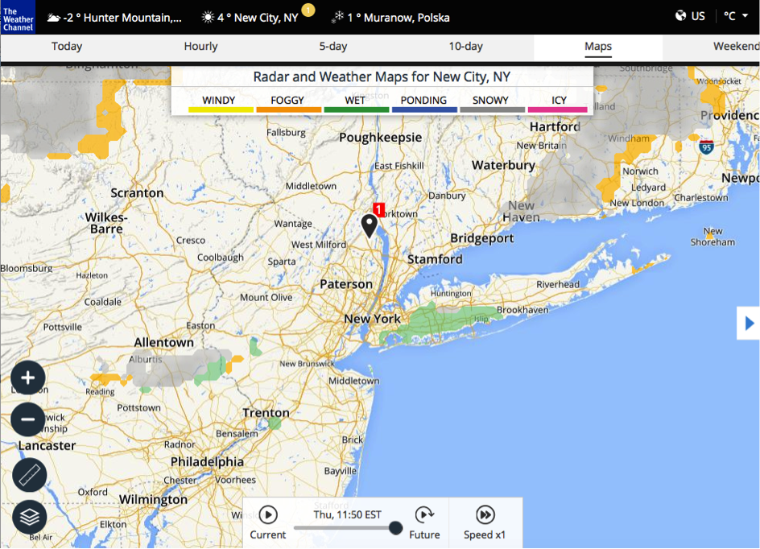

Exercises
1. Getting Weather Forecast for your Neighborhoods
You are going to check the weather forecast for your town or region. You will use weather.com, a leading online weather forecast provider worldwide.
STEPS
a) In your browser, type www.weather.com. The website should automatically detect your location. If not, proceed to step c).

b) You should be able to see the current weather conditions for your location. Scroll down to see the forecast.

c) To check the weather condition of another location, enter the name of the place in the search bar at the top-right corner. As an example, we have chosen New York, NY, USA.

2. Getting the Long Term Weather Forecast
Now you are going to search for a 10-day weather forecast and observe how the conditions change in time.
STEPS
a) In your browser, open weather.com. Type New York, NY in the search bar at the top-right corner of the page to see the weather conditions in New York. Click the 10-days heading on the top center of the page.

b) Click the browser's back button to see the current weather conditions in New York again. Click on the map and use the slider to observe the conditions changing with time.

c) Do the same for your location. Click the 10-days heading to see the long term forecast and open the map in order to see the changing conditions within your location.
3. Using the Allergy Tracker
You can now also check the conditions for people suffering from allergies within your location.
STEPS
a) In your browser, open weather.com. The site should automatically detect your location. If not, enter the name of the place in search bar at the top-right corner of the page.

b) Hover your mouse pointer over More Forecasts on the top-right corner of the page. Click Allergy Tracker.

c) Scroll down to see breathing conditions.

4. Checking the Temperature Map
Now you are going to see the temperature ranges on a radar map in your neighborhood, as well as across the continent.
STEPS
a) In your browser, open weather.com. The website should automatically detect your location. If not, enter the name of the place in search bar at the top-right corner of the page.

b) From the weather.com home page, click "Maps" at the top of the page.

c) Click the layers icon in the bottom left corner.
d) Select the "Temperatures" layer by clicking the appropriate radio button and close the "LAYERS" box by clicking the "X" symbol.
e) You will see the local temperatures map, with different colors representing different temperatures according to the legend at the top of the page.
f) Click the "−" button on the left to zoom out and see the temperatures map for the entire country or continent.
5. Driving Conditions
Weather.com allows you to plan your trip, taking into account the various difficult conditions you can encounter while driving. In the next steps, you are going to check the driving conditions for different regions.
STEPS
a) In your browser, open weather.com. The website should automatically detect your location. If not, enter the name of the place in search bar at the top-right corner of the page.
b) From the weather.com home page, click "Maps" at the top of the page.
c) Click the layers icon in the bottom left corner and select the "Driving Difficulty" layer by clicking the appropriate radio button.

d) If the sponsor message appears, you can close it by clicking the "X" symbol. Otherwise, close the "LAYERS" box by clicking the "X" symbol.
e) You will see the driving conditions map, with different colors representing various driving difficulties. To see the conditions for your planned route you can scroll the map by clicking and dragging or zoom in and out using the "+" and "-" buttons on the left.
6. Getting the Ski Forecast for the Nearby Winter Resorts
Thanks to weather.com, you can now check the ski forecast. It will help you plan your winter holiday or a weekend you would like to spend skiing. In the next steps you are going to get the forecast for the New York vicinity ski resorts.
STEPS
a) In your browser, open weather.com. Type New York, NY in the search bar at the top-right corner of the page to see the weather conditions in New York.

b) Hover your mouse over "More Forecasts" in the top-right corner of the page. Click "Ski Forecast".
c) You will see the conditions for Campgaw Mountain by default. Scroll down to see other resorts.
d) Click on "HUNTER MOUNTAIN" to see the basic weather info for this resort.
e) Click "TAKE ME THERE" to get the detailed conditions for this resort.
7. Informative Video
You are going to watch a short video about the importance of weather forecasting in everyday life, as well as in business.
STEPS
a) Click here to watch "Harnessing the power of Weather: IBM and The Weather Company". See how IBM and The Weather Company help businesses leverage weather data.
|
 5:00
5:00
 Extend Time
Extend Time
 Full Screen
Full Screen